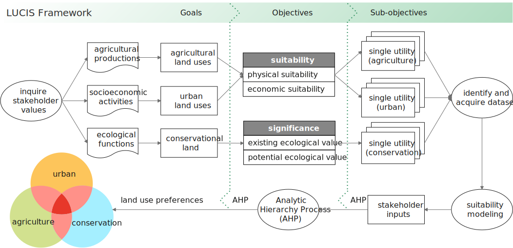
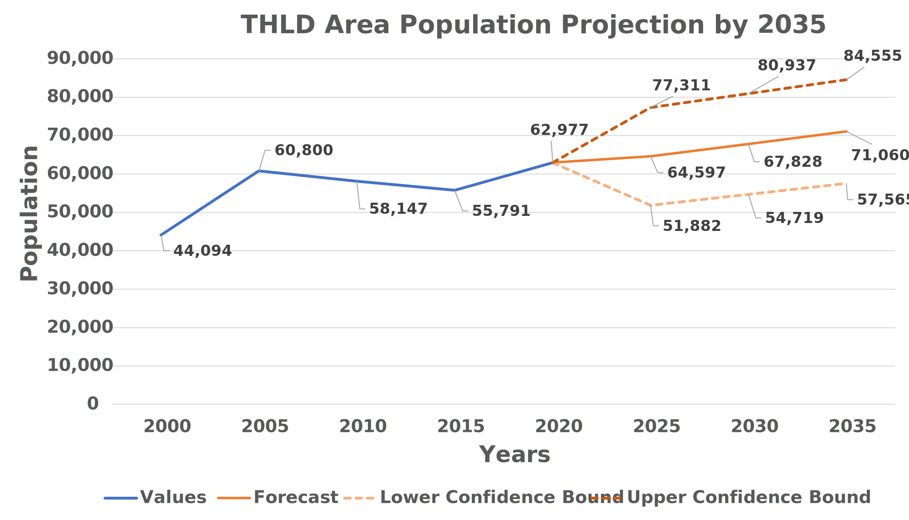
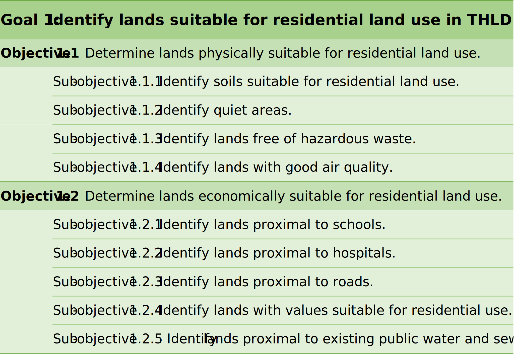
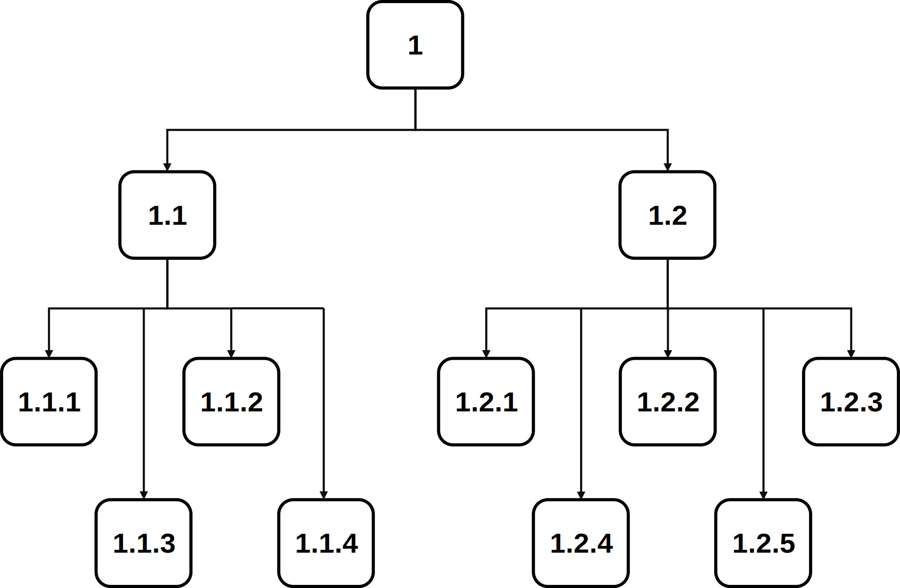
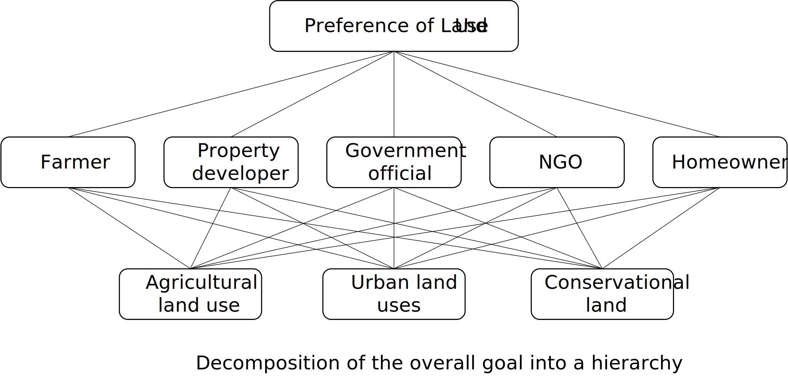
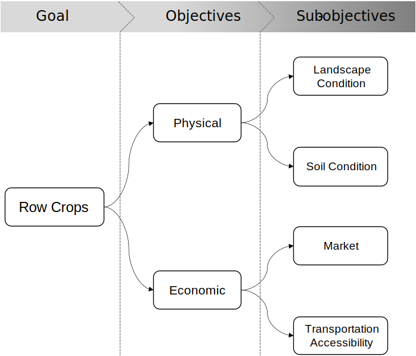
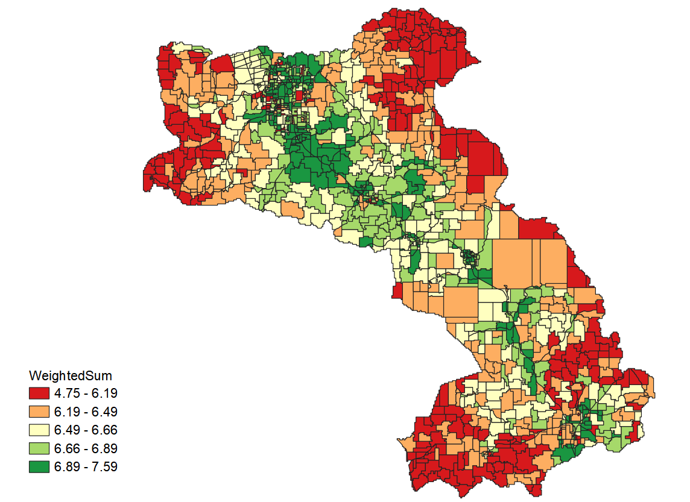
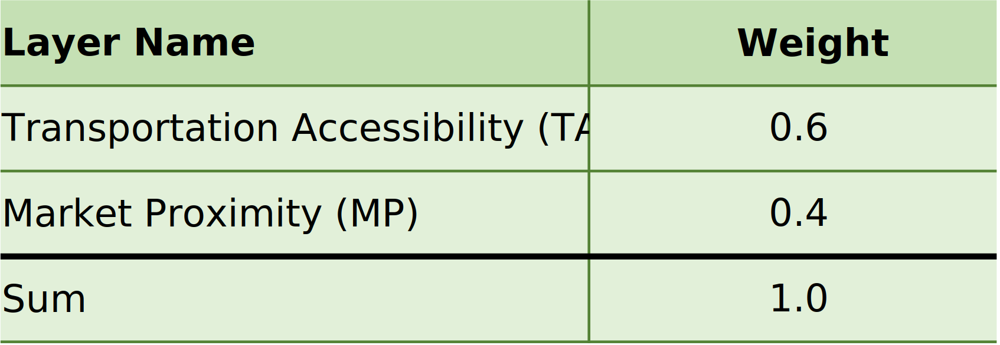
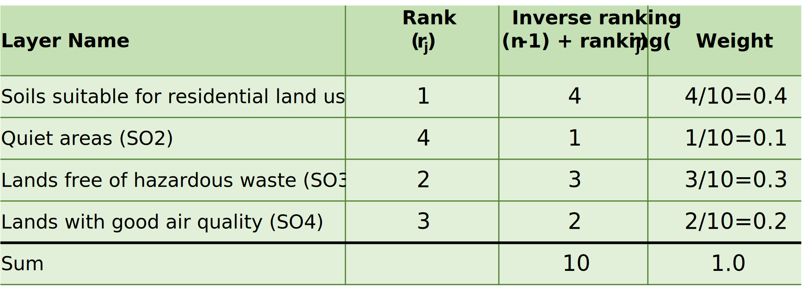
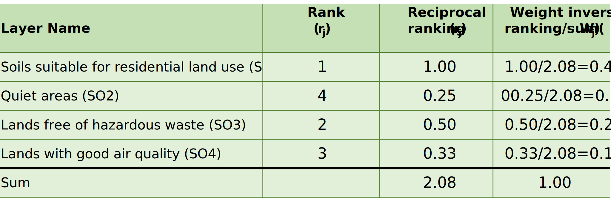

Module 4 - Making Land-Use Decisions using the LUCIS Framework#
1. The LUCIS Philosophy#
When making land-use decisions in a planning process, a common situation faced by planners is the land-use conflicts arisen from the different values and motivations of the stakeholder groups who are interested in one of the three broad land-use categories: (1) agricultural land uses, (2) urban land uses, and (3) conservation land. The Land-Use Conflict Identification Strategy (LUCIS) is a goal-driven GIS model based on the theories of suitability analysis introduced in Module 3. LUCIS aims at producing a spatial representation of probable patterns of future land-use scenario by identifying conflicts in different land-use categories and carefully addressing them.
1.1 The LUCIS workflow#
The diagram below shows the general process of the LUCIS Framework.
{kind=link}
Goals are directly distilled from the stakeholders’ interests in three general purposes—agricultural productions, socioeconomic activities, and ecological functions—which, in turn, correspond to the three broad land-use categories: agricultural land uses, urban land uses, and conservational land.
Objectives are defined to help accomplish individual goals.
Sub-objectives are a group of statements that can help assess their respective objectives, which are the base analytical units of the LUCIS framework. The modeling of sub-objective is referred to as Single Utility Assignment (SUA), the assignment of utility values for individual features in a single layer of spatial data. Here, utility values are the units by which suitability is measured, i.e., a value ranged from 1 to 9 indicating lowest to highest suitability.
🔹First, planners meet with the stakeholders of the project and ask them about their values and opinions. As mentioned before, the stakeholders here are groups of people whose interests fall into one of the three land-use categories, i.e., agriculture, conservation, and urban space. For example, agricultural stakeholders might include members of the local farm bureau or a cattlemen and ranchers group. Urban development stakeholders might include representatives of the homebuilders and real estate associations. Conservation interests might be represented by members of locally active conservation organizations, or non-governmental organization (NGO).
🔹 Second, the values and interests are carefully sorted
to develop a three-tier hierarchical structure formed by goals, objectives, and sub-objectives.
🔹 Then, dataset preparation will be conducted according to the data requirements for modeling sub-objectives.
🔹 The Analytic Hierarchy Process (AHP), a Multi-Criteria Decision Making (MCDM) algorithm, is chosen by LUCIS to merge results from the bottom to the top of the hierarchical structure of LUCIS.
🔹 Finally, after deriving the overall suitability for urban,agriculture, and conservation, the suitability values are transformed into preferences. Each land unit will have a specific combination of the collapsed preference values, 1 (low), 2 (medium), and 3 (high), which are used to identify area of potential land-use conflicts.
1.2 An example of the hierarchical structure of LUCIS#
This section presents a concrete example of LUCIS’s hierarchical structure, i.e., goals, objectives and sub-objectives. The most critical component of a land-use plan is that it must accommodate the projected population growth. In this example, we will use the THLD District Assembly and look at the projected population in year 2035.

Rose, A. N., McKee, J. J., Sims, K. M., Bright, E. A., Reith, A. E., & Urban, M. L. (2020). LandScan 2019. Oak Ridge National Laboratory. https://landscan.ornl.gov/
We can distill a goal from this intent for socioeconomic activities. As shown in the THLD Area Population Projection by 2035 chart above, the two dotted lines are two scenarios representing the upper and lower confidence interval of the population projection by 2035. The middle solid line is the general scenario which indicates that there would be 71,060 people in THLD area. Therefore, the goal is to develop more residential land uses in the THLD area to address the housing demands.
The objectives and sub-objectives are specified in the following table and the hierarchy relationship between goal, objectives and sub-objectives is shown by the following diagram:
Goal, Objectives, Sub-objectives |
Hierarchy Diagram |
|---|---|
 |
 |
💡 Note:
The goal, objectives, and sub-objectives are denoted by the numbers in the hierarchy map.
We want to develop objectives for the residential land use goal to accommodate the future population growth. Considering the physical suitability aspect, we have four sub-objectives. For the economic objective, we have five sub-objectives.
2. Analytic Hierarchy Process#
The Analytic Hierarchy Process (AHP) is a structured technique for organizing and analyzing complex decisions. AHP is a widely applied method for Multi-Criteria Decision Making (MCDM) problems. It is based on solving an eigenvalue equation: , where A is a reciprocal matrix formed by pairwise comparisons.
Without going too far on the mathematical details of AHP, the rest of this section presents an example of how AHP can be used in making land-use decisions. Imagine that five stakeholders were asked about their personal opinions towards the three broad land-use categories. These stakeholders include a farmer, a property developer, a government official, a representative of a non-governmental organization (NGO), and a homeowner. The decision-making intends to decide the preference of three land-use types: agricultural land uses, urban land uses, and conservational land.

The first step of AHP is to structure the intention as a hierarchy. In the first level is the overall goal of land-use preferences. In the second level are the five stakeholders who have interests in land development, and the third level are the three land use types which are to be evaluated by each stakeholders in the second level.
The second step is the elicitation of pairwise comparison judgments. The elements to be compared are the different land-use types for which one is more important in future land development according to each stakeholder in level 2. The scale to use in making the judgments is given in the following table.
Saaty, T. L. (1990). How to make a decision: The analytic hierarchy process. European Journal of Operational Research, 48(1), 9-26. https://doi.org/10.1016/0377-2217(90)90057-I
Land-use types are compared on a scale from 1 (equally important) to 9 (extremely important). Thus there will be five 3 X 3 matrices of judgments since there are five elements in level 2, and 3 land-use types to be pairwise compared for each element. Then, the pairwise values (1–9) are entered in the cells of five matrices.
💡 Why judgments are given in the form of paired comparisons
The most effective way to concentrate judgment is to take a pair of elements and compare them on a single property without concern for other properties or other elements. This is why paired comparisons in combination with the hierarchical structure are useful in deriving measurement.
To understand the judgments, a brief description of each stakeholder’s interests are shown below:
The farmer wants to protect farmers’ interests in the district to have enough agricultural land for future development.
The property developer wants to optimize developers’ interests during the process of developing the district that he wish urban land could occupy the most of area in the district.
The government official wishes to develop more urban land in the future, whereas the straitened financial circumstances do not allow government to sustain too many urban infrastructure facilities.
The NGO‘s representative has focused on forest conservation in this district for many years, and NGO wishes the conservation land could cover more closed forests.
The homeowner wants to have more convenient transportation and better living condition. However, he also indicates that agricultural land is equally important as urban land since many residents are taking agricultural production for a living.
Therefore, the five stakeholders would like to assign land-use suitability for each purpose as follows:
After constructing the matrices, Compute AHP Weights in LUCIS-OPEN tools will be used to calculate local priorities for each matrix.
The third step is to establish the global priorities of the suitable land use preference. In this case, opinions from each stakeholder are viewed as equally important. When arranging the elements in the second level into a matrix and comparing them one by one for the relative importance of the elements concerning the overall goal, each of the five stakeholders will receive the same priority of 20%.
The table lays out the local priorities of land-use types with respect to each stakeholder in a matrix and multiply each column of vectors by the priority of the corresponding stakeholder and add across each row which results in the desired vector of land-use importance in the table. In this case, urban land uses are the most favorable type in this district. Agricultural land use was less desirable than urban land use, and Conservation land was the least important in the three land-use types.
3. How the Row Crops Models fit into LUCIS#
3.1 The structure of the row crops goal#
Recall, in Module 3, we have created four models to analyze Suitability of Row Crops including (1) landscape condition, (2) soil condition, (3) market proximity, and (4) transport accessibility. These models are in fact integral components of the LUCIS’s hierarchical structure. Together, they constitute the Row Crops goal, one of the goals under the agricultural land uses. The following diagram reflects the models are organized to form the 3-tier hierarchy of LUCIS.

The row crops goal consists of two objectives, (1) physical suitability and (2) economic suitability, the same as described before in Section 1.1. From the physical perspective, we assess suitability for row crops production based on the attributes (or conditions) that is native to the land. Thus, Landscape Condition and Soil Condition are under the first objective. From an economic stand point, we evaluate suitability for growing row crops based on the cost-effectiveness of distributing them from a given IDU. Therefore, we developed Transport Accessibility and Market Proximity models as sub-objectives of the second objective.
3.2 The bottom-up strategy to obtain the final suitability#
The most intuitive approach to combine results of individual sub-objectives is by assigning weights.
💡 Why a middle tier of objectives is needed?
In Section 1.1, we mentioned that the process of modeling sub-objective is called single utility assignment, or SUA. Modeling an objective often requires to evaluate more than a single factor. Therefore, correspondingly, such process is referred to as Multiple Utility Assignment (MUA). But, it is critical to make sure that a MUA maintains a cohesive subject by itself, and its components are coherent and all contribute to that subject. For example, if we don’t create a middle tier for objectives under the row crops goals, mixing the four sub-objectives makes little sense conceptually and operationally. In other words, it is logical to assign weights between market proximity and transport accessibility since they are both proximity related. But, it would seem wrong, like comparing an apple with an orange, to assign weights between soil condition and market proximity as they are measuring two totally different things.
The logic explained above set the rules for how to combine from sub-objectives to objectives and to goals. In a nutshell, the process is a series of “Weighted Sum” starting from the bottom tier (sub-objectives) to the middle tier (objectives), and to the top tier (goals). Note that, different branch cannot be mixed. They can only be combined when their branches merged. For example, we can use the following weights to get the final suitability of row crops.
Under economic suitability, add market proximity and transport accessibility by using a 30% and 70% weight, respectively.
Under physical suitability, add soil condition and landscape condition with 60% and 40% weights, respectively.
Finally, after getting physical and economic suitability, the two objectives gets added with a 70% and 30% weight, respectively.
The final suitability according to the above weights is shown below:

4. Weighting Methods for MUA#
As mentioned above, the combination of multiple SUA layers is called Multiple utility Assignment (MUA). The MUA assignment process is often referred to as weighted overlay, which, as the name implies, combines layers using weights or percentage of influence. A couple of weighting methods are presented below. In the exercises, we will see how we can apply various methods to combine results from individual SUAs.
4.1 Applying preference or expert knowledge#
The naïve approach for determining weights is based on preference or expert knowledge. For example, in the objective of economic suitability, one may want to assign a higher weight to transport accessibility than market proximity since nowadays accessibility to transportation networks is more vital than closeness to the markets as most of the cultivated crops are not sold locally or even within the region.

4.2 The rank sum method#
The rank sum method is a simple method to assign weights by arranging the criteria (layers) in rank order where the value 1 signifies most important, 2 next important, and so on, to the nth important criteria. Next, subtract each layer’s ranking from the total number of layers and add 1 to produce the inverse rank value. Finally, divide each of the layer’s inverse rank value by the sum of the inverse rankings for all layers to produce the weight value for each layer.

4.3 The rank reciprocal method#
This method of developing weights requires the modeler to reciprocate each layer value, then divide the individual reciprocal values by the sum of all reciprocal values.

4.4 The rank exponential method#
The rank exponential method uses essentially the same methodology as the rank sum method, but allows the modeler to exponentially raise the individual ranking values, which separates the weighted values farther apart than either the rank sum or rank reciprocal methods. Each individual ranking value is then divided by the sum of all the exponential values.

Comparison of the three ranking methods described here indicates that the rank sum method tends to keep the criteria weightings closer together, or more clustered, than the other methods, while the rank exponential method exaggerates the extreme criteria more than the rank sum or rank reciprocal.
Malczewski, J. (1999). GIS and multicriteria decision analysis. New York: John Wiley & Sons, Inc.
4.5 Weights generated by AHP#
As introduced before, AHP is a weighting method based on pairwise comparisons. Compared to other weighting methods mentioned above, AHP is more mathematically involved and sophisticated. In LUCIS, it is usually used in determining weights for different goals, which we will see in Exercise 2. Also, please note for AHP to work mathematically, there has to be at least 3 criteria participating in the pairwise comparisons. Such minimum number requirement stops the use of AHP in certain scenarios. For example, in the row crop model described in Section 3, AHP is not applicable for determining weights between the two sub-objectives under either objectives.
5. Exercises and Surveys#
Exercise 1：Please replicate the AHP calculations discussed in Section 2. Use the Compute AHP Weights tool to solve the five matrices. Please create an Excel file to store the results of each (local) priority vector. Calculate the final priority vector, and submit the Excel file.
Please complete exercise 2.
Please complete exercise 3.
Please submit your exercises here.
Please complete the survey for Module 4 here.
Please complete the post-training survey for your overall experiences with the first GALUP workshop—Land-Use Suitability Analysis with QGIS Tools at here.